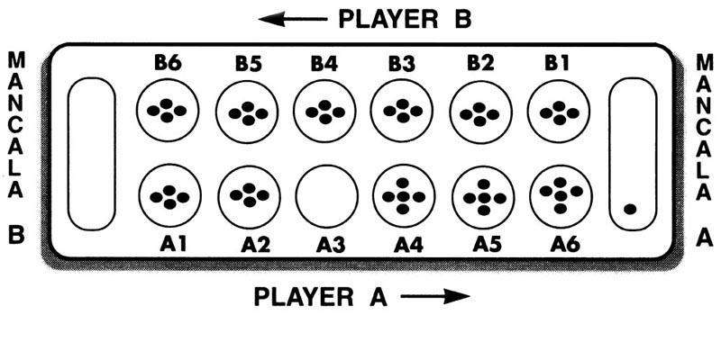

Spring 2016 CS151 Team Project
Mancala
Instructor: Dr. Kim
- You are not allowed to use the drag and drop function of NetBean to place
GUI components.
- Read the Project Rule to understand when and what to submit.
- You have to draw a Mancala board, pits, and stones to complete this project. Also, label each pit with A1, A2, ....B1, B2, ... and each mancala with A and B as shown in the Picture below.
Mancala is an ancient board game for 2 players. In this project, you will
develop a version of the basic game with a graphical interface.
Mancala Game
The board consists of two rows of pits, each. Three pieces of stones are
placed in each of the 12 holes. Each player has a large store called Mancala
to the right side of the board. One player starts the game by
picking up all of the stones in any one of his own pits. Moving
counter-clock wise, the player places one in each pit starting
with the next pit until the stones run out.
If you run into your own Mancala, place one stone in it. If there are
more stones to go past your own Mancala, continue placing them
into the opponent's pits. However, skip your opponent's Mancala. If the
last stone you drop is your own Mancala, you get a free turn .
If the last stone you drop is in an empty pit on your side, you get
to take that stone and all of your opponents stones that
are in the opposite pit. Place all captured stones in your own Mancala.
The game ends when all six pits on one side of the Mancala board are empty.
The player who still has stones on his side of the board when the game ends
captures all of those pieces and place them in his Mancala. The player who has
the most stones in his Mancala wins.

Requirements and User Interface
This game is for two human players. (No computer player is considered in
this project. Two players will take a turn to play this game using one mouse.)
Initially, the program displays an empty board, then asks the
player to enter the number of stones that will be placed in each pit.
For example, when the user enters 3, 3 stones will be places in each pit of
the board. The two Mancala will be still empty.
(Two players will agree on this number and one of the player will enter the
number.) Let's make the maximum number of stones per pit is 4.
That is, at the beginning the player can enter 3 or 4 for the number of
stones/per pit.
A player selects a pit by clicking the mouse on the pit
Then, the program updates the board according to the game rule explained above.
The program offers a undo function for the player. Use a button for this function.
Before the other player takes a turn, the current player can undo
what he has just selected. The state of the board is going back to
the state before the player makes a selection of a pit.
The player is not allowed to make multiple undos in a row.
For example, in the following picture (1), suppose the player A selected
the pit e. As a result, the state of the board will change to (2).
If this player undos, the state of the board goes back to (1).
The players can not undo again (that is, pressing the undo button at this
moment will not do anything) and has to make a choice of a pit.
The player is allowed to undo again after making a choice.
The player can make undo at most 3 times at his turn.
(1)
4 4 4 4 4 4
0 a b c d e f 0
4 4 4 4 4 4
(2)
4 4 4 4 5 5
0 a b c d e f 1
4 4 4 4 0 5
Use the MVC pattern to design the program. If a view also serves as a controller, any input entered through view has to updated the model.
For example, the pits are part of the view and can serve as a controller
to take a user input.
This application provides the user's with different styles of the Mancala
board. The shape and color of pits and Mancalas can be the part of the style.
Use the Strategy pattern to plug in a style of the board.
The initial screen of the game displays two buttons to select the style of the board. Before the game starts, the player selects one of the styles by clicking
the corresponding button, then the board will be displayed in the selected
style.
Again, your design has to follow the Strategy pattern, so that the number of
selectable styles is not limited to 2.
Be creative to come up with two different styles of the board.
The use of the Strategy pattern can be found in the Invoice example
from the text book. An Invoice Formatter can be plugged in to display
an invoice in a different format.
The LayoutManager of Java Library is also another example of using the
Strategy Pattern.
The graphical presentation does not have to be fancy as long as
all required GUI components function correctly.
Name the test program with a main method as MancalaTest.java.